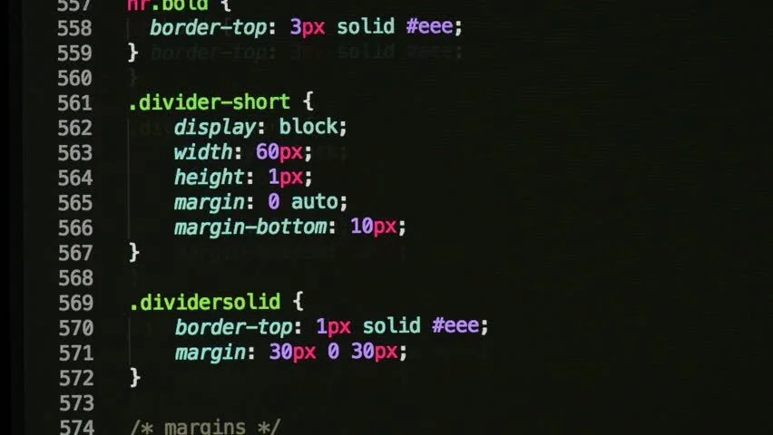

Использование CSS
CSS используется создателями веб-страниц для задания цветов, шрифтов, стилей, расположения отдельных блоков и других аспектов представления внешнего вида этих веб-страниц. Основной целью разработки CSS является ограждение и отделение описания логической структуры веб-страницы (которое производится с помощью HTML или других языков разметки) от описания внешнего вида этой веб-страницы (которое теперь производится с помощью формального языка CSS).
link rel="stylesheet" href="style3.css"
прописать тэг в head сайта html
До появления CSS оформление веб-страниц осуществлялось исключительно средствами HTML, непосредственно внутри содержимого документа. Однако с появлением CSS стало возможным принципиальное разделение содержания и представления документа. За счёт этого нововведения стало возможным лёгкое применение единого стиля оформления для массы схожих документов, а также быстрое изменение этого оформления.
Преимущества:
Несколько дизайнов страницы для разных устройств просмотра. Например, на экране дизайн будет рассчитан на большую ширину, во время печати меню не будет выводиться, а на КПК и сотовом телефоне меню будет следовать за содержимым.
Уменьшение времени загрузки страниц сайта за счёт переноса правил представления данных в отдельный CSS-файл. В этом случае браузер загружает только структуру документа и данные, хранимые на странице, а представление этих данных загружается браузером только один раз и может быть закэшировано.
Простота последующего изменения дизайна. Не нужно править каждую страницу, а достаточно лишь изменить CSS-файл.
Дополнительные возможности оформления. Например, с помощью CSS-вёрстки можно сделать блок текста, который остальной текст будет обтекать (например для меню) или сделать так, чтобы меню было всегда видно при прокрутке страницы.

Пример тэга:
Тут вы видите как с помощью css задают ширину,высоту,расстояние от сторон и рамку для кнопки